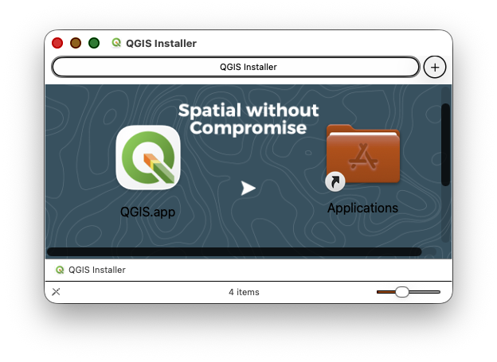
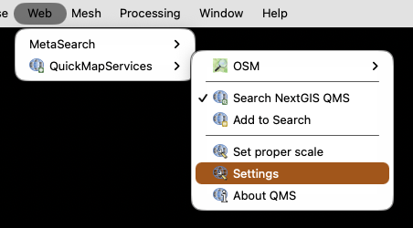
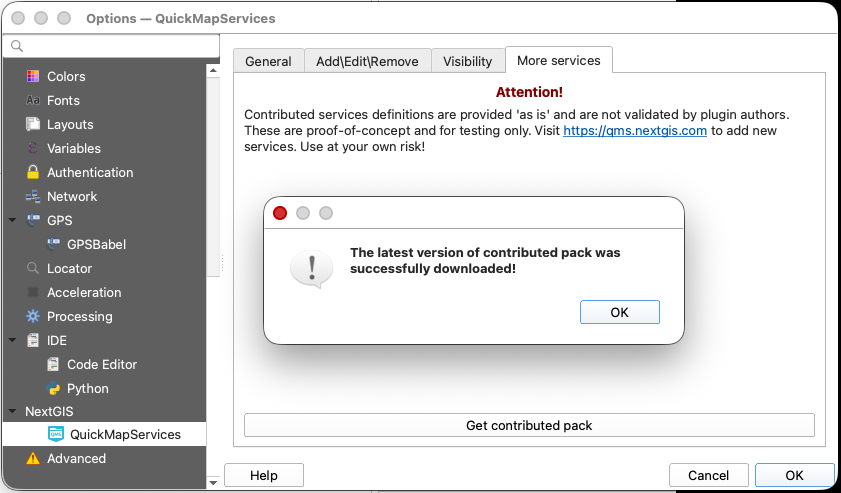
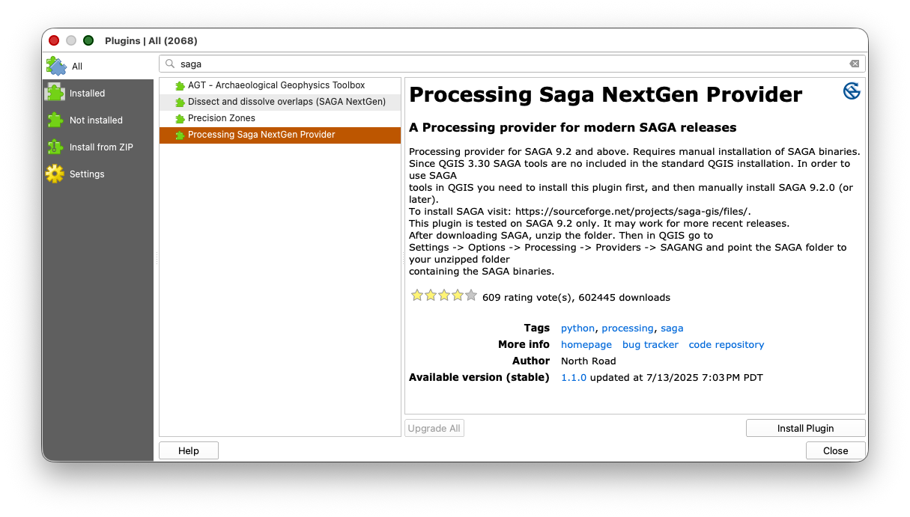
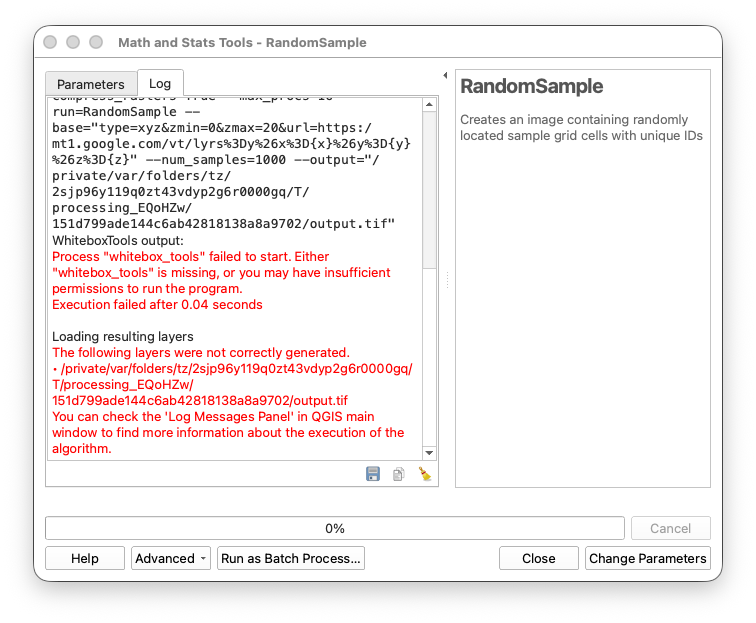
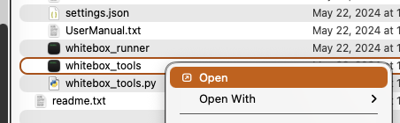
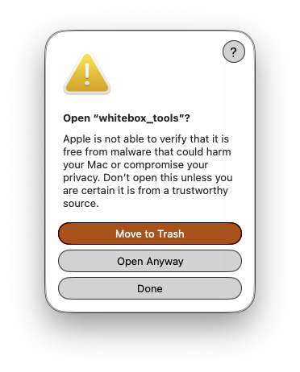

Installing QGIS and Plugins

Introduction
QGIS (Quantum Geographic Information System) is a free, open-source desktop GIS application that will serve as our primary tool for spatial data analysis and cartography. This lab will guide you through the installation process and setup of essential plugins that extend QGIS's functionality for terrain analysis, geoprocessing, and basemap integration.
Learning Objectives
By the end of this lab, you will be able to:
- Install QGIS on macOS, Windows, or Linux
- Create a new user profile for course work
- Install and configure essential QGIS plugins
- Set up WhiteboxTools for advanced terrain analysis
- Access basemap services through QuickMapServices
Installing QGIS
macOS Installation

- Download the latest Regular (AKA: PR or Preview Release) release from: qgis.org/en/site/forusers/download.html
- Download the DMG file for macOS
- Double-click the downloaded DMG file to open it
- It will take a few minutes to decompress and validate the DMG file
- Once the installation window opens, drag and drop the QGIS app icon into the Applications folder icon
- Launch QGIS from your Applications folder
Note: As of 2024, QGIS is now properly registered with Apple, so you should not encounter security warnings during installation or first launch.
Windows Installation
- Visit qgis.org/en/site/forusers/download.html
- Download the QGIS Standalone Installer (Regular release)
- Run the installer with administrator privileges
- Accept the default installation options
- Launch QGIS from the Start menu
For a detailed walkthrough, see: How to Install QGIS on Windows
Linux Installation
- Use your distribution's package manager
- Add the official QGIS repository for the latest versions
- Install using
apt,yum, or equivalent package manager
For distribution-specific instructions, visit: QGIS Installers
Setting Up Your QGIS Profile
Creating a new user profile provides a clean workspace for the course and makes troubleshooting easier if issues arise.
Create a New User Profile
- Launch QGIS
Go to Settings > User Profiles > New Profile

- Name the profile something like
Earthsys144orEarthsys144-Labsto identify it - Click OK
QGIS will restart with your new profile. This creates a fresh configuration with default settings. Your old profile (if you had one) remains available and you can switch between profiles from Settings > User Profiles.
Installing Essential Plugins
QuickMapServices Plugin
QuickMapServices provides convenient access to basemap layers from various providers (Google, Esri, OpenStreetMap, and more).
Install the Plugin:
- Go to Plugins > Manage and Install Plugins
- In the search box, type QuickMapServices
- Select the plugin from the list and click Install Plugin
- Close the Plugin Manager

Load Additional Basemap Services:
- Go to Web > QuickMapServices > Settings
- Click on the More Services tab
- Click Get Contributed Pack
- Close the Settings dialog


Test the Installation:
- Go to Web > QuickMapServices
- You should see many service providers listed (Google, Esri, NASA, etc.)
- Select Google > Google Hybrid to load a basemap

SAGA NextGen Plugin
SAGA (System for Automated Geoscientific Analyses) provides powerful geoprocessing tools. The SAGA NextGen plugin keeps up with the latest SAGA updates and ensures compatibility with current QGIS versions.
Install the Plugin:
- Open Plugins > Manage and Install Plugins
- In the All tab, search for SAGA
- Find Processing SAGA NextGen Provider and click Install Plugin
- Close the Plugin Manager

Verify Installation:
- Go to Processing > Toolbox to open the Processing Toolbox panel
- You should now see SAGA Next Gen as a provider alongside the original SAGA provider
- When using SAGA tools, always prefer the SAGA Next Gen version for better compatibility

The SAGA Next Gen toolset duplicates the original SAGA provider but with improved integration for the latest QGIS versions.
WhiteboxTools Plugin
WhiteboxTools is an excellent, high-performance toolkit particularly useful for hydrological modeling, terrain analysis, and raster processing. Installing WhiteboxTools is a two-step process: downloading the executables and then installing the QGIS plugin.
Step 1: Download WhiteboxTools Executables
- Download the appropriate version for your operating system from: whiteboxgeo.com/download-redirect/
- Unzip the downloaded archive to a stable location on your hard drive:
- macOS: Consider
/Users/[username]/WBTor~/Applications/WBT - Windows: Consider
C:\WBTorC:\Program Files\WBT - Linux: Consider
~/WBTor/opt/WBT
- macOS: Consider
- Remember this location - you'll need to point the QGIS plugin to it
For a video demonstration, see: WhiteboxTools Setup Video
Step 2: Install the WhiteboxTools QGIS Plugin
- Return to Plugins > Manage and Install Plugins
- Search for WhiteboxTools
- Find WhiteboxTools for QGIS and click Install Plugin
- Close the Plugin Manager
Step 3: Configure WhiteboxTools in QGIS
- Go to Processing > Toolbox to open the Processing Toolbox
- Click the wrench icon at the top to open Processing Settings
- In the left panel, expand Providers > WhiteboxTools
- Double-click in the box next to WhiteboxTools executable
- Click the ... button to browse to the folder where you unzipped WhiteboxTools

Navigate to the WhiteboxTools executable inside the WBT folder:
- macOS/Linux: Select the
whitebox_toolsfile (no extension) Windows: Select
whitebox_tools.exe

- macOS/Linux: Select the
- Click Open, then OK to save the settings
Verify Installation:
- In the Processing Toolbox, expand the WhiteboxTools provider
- You should see hundreds of tools organized by category
- Try running a simple tool like RandomSample to verify functionality
Note on WhiteboxTools Plugins: WhiteboxTools includes additional plugin executables in the WBT/plugins/ directory. These specialized tools extend WhiteboxTools functionality and will be used later in the course.
Troubleshooting WhiteBox Tools
macOS Security Configuration for WhiteboxTools
Important for macOS users: WhiteboxTools executables are not registered with Apple, which triggers macOS security warnings. You'll need to explicitly allow the executable to run.
If you see an error like:
WhiteboxTools output:
Process "whitebox_tools" failed to start. Either "whitebox_tools" is missing,
or you may have insufficient permissions to run the program.
Execution failed after 0.04 seconds

Follow these steps:
- Navigate to your WhiteboxTools installation folder (e.g.,
/Users/[username]/WBT) Right-click (or Control-click) on the
whitebox_toolsexecutable
- Select Open from the context menu
- A security warning will appear - DO NOT click "Move to Trash"
- Dismiss the warning dialog
- Go to System Settings > Privacy & Security
- Scroll down to the Security section
- Click Open Anyway next to the message about
whitebox_tools
- Confirm through any additional security prompts 
- The executable will launch in Terminal - you can close the Terminal window once it opens
- Return to QGIS and retest the RandomSample tool
This process only needs to be done once. After approval, WhiteboxTools will run normally from QGIS.
Configure Processing Toolbox Display
- Go to Processing > Toolbox
- Right-click in the toolbox panel
- Select Reorganize by Type to group similar tools together
Troubleshooting Common Issues
QGIS Won't Launch
- Windows: Try running as administrator
- macOS: Check that the app is in your Applications folder
- All platforms: Check system requirements at qgis.org
- Clear QGIS settings by renaming the QGIS profile folder and creating a new profile
Plugins Not Working
- Verify QGIS version compatibility in the plugin description
- Check your internet connection (required for plugin installation)
- Try Plugins > Manage and Install Plugins > Reinstall Plugin
- Clear the plugin cache and restart QGIS
WhiteboxTools Executable Not Found
- Verify you've downloaded and unzipped the WhiteboxTools executables
- Double-check the path in Processing > Options > Providers > WhiteboxTools
- Make sure you're pointing to the executable file, not just the folder
- macOS/Linux: Ensure the executable has execute permissions (
chmod +x whitebox_tools)
SAGA Tools Missing or Broken
- Make sure you installed Processing SAGA NextGen Provider, not just the base SAGA
- Try using tools from SAGA Next Gen instead of the original SAGA provider
- Some tools may require specific data types or CRS - check tool documentation
QuickMapServices Shows No Basemaps
- Make sure you clicked Get Contributed Pack in the settings
- Check your internet connection
- Try Web > QuickMapServices > Settings > More Services > Reload to refresh the list
Submission
To verify your installation:
- Create a new QGIS project
- Load the Google Hybrid basemap from Web > QuickMapServices > Google > Google Hybrid
- Open the Processing Toolbox and expand it to show SAGA Next Gen and WhiteboxTools providers
- Create a screenshot showing:
- QGIS interface with the Google Hybrid basemap loaded
- Processing Toolbox panel visible with SAGA Next Gen and WhiteboxTools expanded
- Upload the screenshot to Canvas
Next Steps
With QGIS and essential plugins installed, you're ready to:
- Create your first maps with professional basemaps
- Perform terrain analysis using WhiteboxTools
- Apply geoprocessing algorithms from SAGA Next Gen
- Begin exploring spatial data visualization and analysis
These tools will form the foundation of all the desktop GIS work we'll do throughout the course.